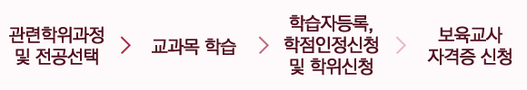
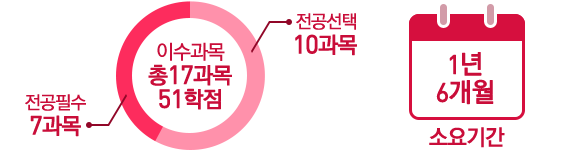
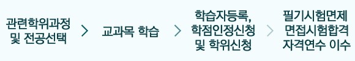

자격증 관련 추천 교육과정

2급 자격증 취득 절차
전문대학 이상 졸업자
사회복지관련 총 14과목(42학점)을 이수해야 합니다. 전공필수 10과목+전공선택 4과목으로 구성되면, 1년(2학기)의 기간이 소요됩니다.
- 전공필수 (10과목)
- 사회복지개론, 사회복지법제, 사회복지실천기술론, 사회복지실천론, 사회복지정책론, 사회복지조사론, 사회복지행정론, 인간행동과사회환경, 지역사회복지론, 사회복지현장실습
- 전공선택 (4과목)
- 가족복지론, 노인복지론, 여성복지론, 의료사회사업론, 자원봉사론, 장애인복지론, 정신건강론, 정신보건사회복지론, 청소년복지, 학교사회사업론 (중 4과목 선택)
고등학교 졸업자
총 80학점 이상 이수(전공 45학점+교양 15학점+일반 20학점)해야 하며, 약 2년의 기간이 소요됩니다.

2급 자격증 취득 절차

전공과목 선택

전문대학 이상 졸업자 기준, 아동학 관련 총 17과목(51학점) 이수(전공필수 7과목+전공선택 10과목)해야 하며, 총 1년 6개월의 기간이 소요됩니다.
- 전공필수 (7과목)
- 보육학개론, 영아발달, 유아발달, 보육과정, 보육교사론, 아동복지(론) ,보육실습
- 전공선택 (10과목)
-
- 아래 중 1과목 선택 인간행동과사회환경, 아동관찰 및 행동연구, 아동생활지도, 아동상담(론), 특수아동지도, 장애아 지도
- 아래 중 6과목 선택 놀이지도, 언어지도, 아동문학, 아동음악, 아동동작, 아동미술, 아동수학지도, 아동과학지도, 영유아프로그램개발과평가, 영유아교수방법(론)
- 아래 중 2과목 선택 아동건강교육, 아동간호학, 아동안정관리, 아동영양학, 정신건강(론)
- 아래 중 1과목 선택 부모교육(론),가족복지(론),가족관계(론),지역사회복지(론),보육정책(론),어린이집 운영과관리

2급/3급 자격증 취득 절차

2급 (4년제 졸업 이상)
4년제 졸업 이상 청소년학 관련 총 8과목(24학점)을 이수해야 하며, 이수 기간은 약 6개월(1학기)의 기간이 소요됩니다.
- 8과목
- 청소년육성제도론,청소년지도방법론, 청소년심리 및 상담, 청소년문화, 청소년활동, 청소년프로그램개발과 평가, 청소년문제와 보호, 청소년복
3급 (2년제 졸업 이상)
4년제 졸업 이상 청소년학 관련 총 7과목(21학점)을 이수해야 하며, 이수 기간은 약 6개월(1학기)의 기간이 소요됩니다.
- 7과목
- 청소년육성제도론, 청소년지도방법론, 청소년심리 및 상담, 청소년문화, 청소년활동, 청소년프로그램개발과 평가, 청소년문제와 보호 (전문대졸 이상)